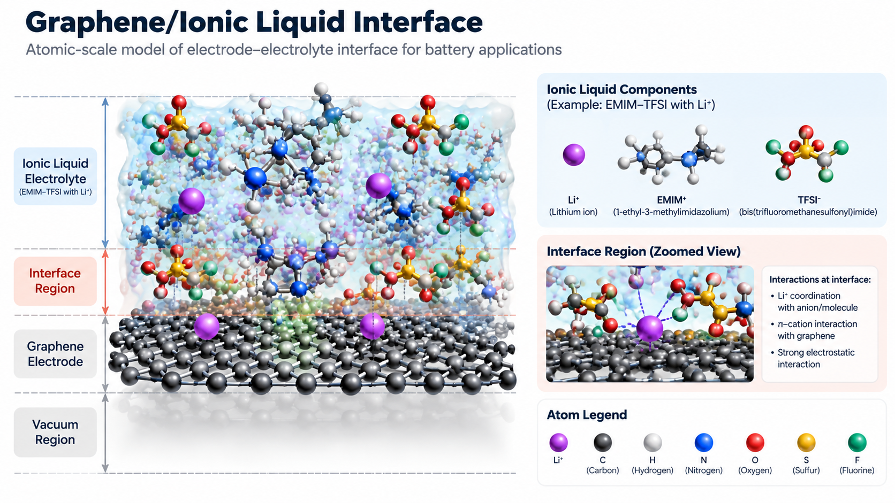
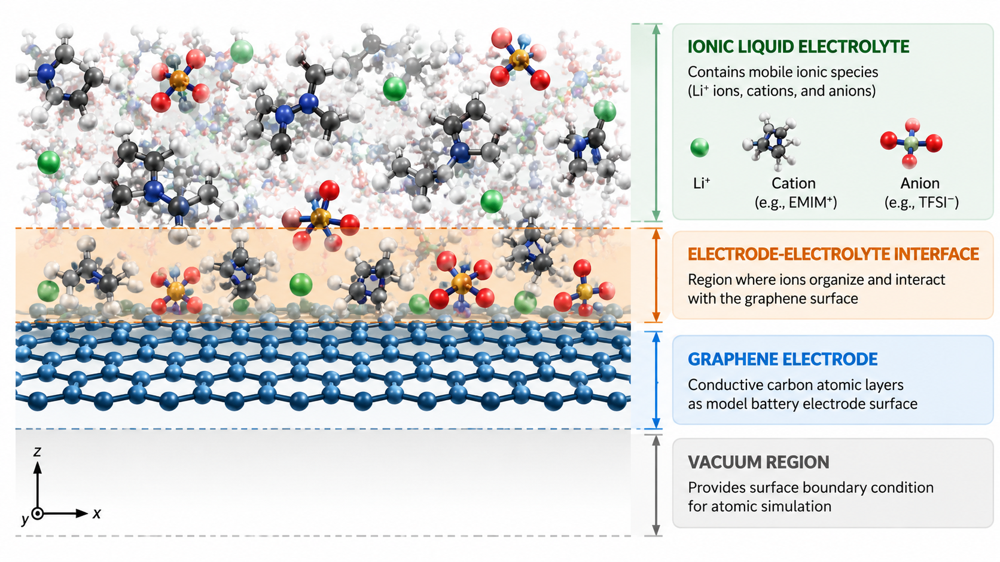

COMPUTATIONAL MATERIALS CASE STUDY
🔋 Graphene/Ionic Liquid Interface Simulation
CASE OVERVIEW
Case Overview
This hands-on case extends graphene electronic structure simulation into a battery electrode-electrolyte interface model.
Graphene is used as a conductive electrode surface, while ionic liquid represents the electrolyte environment.
The workflow combines Quantum ESPRESSO, PACKMOL, LAMMPS, and Python-based analysis.

Atomic-scale visualization of graphene electrode and ionic liquid electrolyte interface model.
-
🧱 Material System
Graphene Electrode
Model conductive surface for battery electrode interface.
Electrolyte
Ionic liquid environment surrounding the electrode.
-
🧮 Computational Method
DFT
Quantum ESPRESSO is used for graphene structure optimization.
MD
LAMMPS is used to study interface evolution.
-
💻 Simulation Tools
Quantum ESPRESSO
Electronic structure calculation
PACKMOL
Interface construction
LAMMPS
Molecular dynamics
-
📈 Analysis
Structural
RDF and density profile
Dynamic
Ion distribution and diffusion
SCIENTIFIC MOTIVATION
🔬 Research Question
This simulation investigates how ionic liquid species organize and interact near a graphene electrode surface.
The main questions explored are:
- How are ions distributed near the graphene surface?
- How do electrolyte molecules interact with the electrode?
- How does the interface structure evolve during molecular dynamics?
LEARNING GOALS
🎯 Learning Objectives
After completing this case, participants will understand the complete workflow of graphene-based electrode-electrolyte interface simulation.
The participants will learn how to:
| Objective | Description |
|---|---|
| Model | Understand graphene as an electrode surface model |
| Construct | Build graphene and ionic liquid interface structures |
| Simulate | Perform molecular dynamics simulation of the interface |
| Analyze | Extract structural properties from simulation results |
MODEL DESCRIPTION
🧩 System Overview
The simulated system represents an electrode-electrolyte interface, where ionic liquid molecules interact with a graphene electrode surface.

Schematic representation of graphene electrode and ionic liquid interface system used in molecular dynamics simulation.
The model consists of three main regions:
flowchart TB
A["Ionic Liquid Electrolyte<br><br>Li+ ions<br>Cations<br>Anions"]
B["Electrode-Electrolyte Interface<br><br>Ion organization<br>Surface interaction"]
C["Graphene Electrode<br><br>Carbon atomic layers"]
D["Vacuum Region<br><br>Surface boundary condition"]
A --> B
B --> C
C --> D
classDef electrolyte fill:#e3f2fd,stroke:#1976d2,stroke-width:2px;
classDef interface fill:#fff3e0,stroke:#ef6c00,stroke-width:2px;
classDef electrode fill:#e8f5e9,stroke:#2e7d32,stroke-width:2px;
classDef vacuum fill:#eeeeee,stroke:#616161,stroke-width:2px;
class A electrolyte;
class B interface;
class C electrode;
class D vacuum;
| Component | Physical Role | Simulation Purpose |
|---|---|---|
| Ionic Liquid Electrolyte | Mobile ionic environment containing Li⁺, cations, and anions | Represents electrolyte behavior near electrode surface |
| Electrode-Electrolyte Interface | Interaction zone between graphene and ionic species | Determines ion organization and surface interaction |
| Graphene Electrode | Conductive carbon-based electrode model | Provides active surface for electrolyte interaction |
| Vacuum Region | Empty space above surface model | Maintains surface boundary condition in simulation |
The graphene structure from the previous electronic structure case is reused as the electrode foundation before introducing the ionic liquid electrolyte.
SIMULATION DESIGN
RESEARCH PIPELINE
🧭 Research Pipeline Overview
The research pipeline illustrates the transformation from a material model into a complete simulation-based understanding of the graphene-electrolyte interface.
flowchart LR
A["Graphene + Ionic Liquid<br><br>Interface Model"]
B["Quantum ESPRESSO<br><br>Graphene Optimization"]
C["PACKMOL<br><br>Interface Construction"]
D["LAMMPS<br><br>Molecular Dynamics"]
E["Python Analysis<br><br>RDF, Density, Diffusion"]
A --> B
B --> C
C --> D
D --> E
classDef material fill:#e3f2fd,stroke:#1976d2,stroke-width:2px;
classDef dft fill:#fff3e0,stroke:#ef6c00,stroke-width:2px;
classDef structure fill:#fffde7,stroke:#f9a825,stroke-width:2px;
classDef md fill:#e8f5e9,stroke:#2e7d32,stroke-width:2px;
classDef analysis fill:#f3e5f5,stroke:#7b1fa2,stroke-width:2px;
class A material;
class B dft;
class C structure;
class D md;
class E analysis;
🚀 Simulation Workflow
The simulation workflow connects material preparation,
interface construction, molecular dynamics simulation,
and data analysis into a complete computational pipeline.
flowchart LR
A["01<br>GRAPHENE<br>Surface Preparation"]
B["02<br>QUANTUM ESPRESSO<br>Geometry Optimization"]
C["03<br>PACKMOL<br>Interface Construction"]
D["04<br>LAMMPS<br>Molecular Dynamics"]
E["05<br>PYTHON<br>Interface Analysis"]
A --> B
B --> C
C --> D
D --> E
classDef graphene fill:#e3f2fd,stroke:#1976d2,stroke-width:2px;
classDef qe fill:#fff3e0,stroke:#ef6c00,stroke-width:2px;
classDef md fill:#e8f5e9,stroke:#2e7d32,stroke-width:2px;
classDef analysis fill:#f3e5f5,stroke:#7b1fa2,stroke-width:2px;
class A graphene;
class B qe;
class C qe;
class D md;
class E analysis;
| Stage | Main Activity | Output |
|---|---|---|
| 01 | Prepare graphene electrode structure | Graphene model |
| 02 | Optimize graphene geometry using QE | Stable surface structure |
| 03 | Add ionic liquid electrolyte using PACKMOL | Interface configuration |
| 04 | Simulate atomic evolution using LAMMPS | MD trajectory |
| 05 | Analyze interface properties | Structural information |
COMPUTATIONAL METHOD
SIMULATION PROTOCOL
⚙️ Simulation Procedure
The simulation is performed through four computational stages, starting from graphene preparation to interface property analysis.
Stage 01 — Graphene Electrode Preparation
Purpose
Prepare a stable graphene surface model as the electrode foundation.
Input
Initial graphene structure
Quantum ESPRESSO input files
Pseudopotential data
Computational Process
Graphene structure
↓
Geometry relaxation
↓
Optimized graphene electrode
Output
optimized_graphene structure
Stage 02 — Ionic Liquid Interface Construction
Purpose Generate the initial electrode-electrolyte interface configuration.
Input
Optimized graphene surface
+
Ionic liquid molecules
Computational Process
Graphene surface
+
Ionic liquid components
↓
PACKMOL structure generation
↓
Interface configuration
Output
interface.xyz
Stage 03 — Molecular Dynamics Simulation
Purpose
Observe atomic movement and structural evolution of the graphene-electrolyte interface.
Input
Interface structure
LAMMPS input parameters
Computational Process
Energy minimization
↓
Equilibration
↓
Production molecular dynamics
Output
trajectory.lammpstrj
Stage 04 — Interface Analysis
Purpose
Extract structural and dynamic properties from molecular dynamics results.
Analysis Parameters
| Property | Method |
|---|---|
| Ion distribution | Density profile |
| Atomic interaction | RDF |
| Local environment | Coordination number |
| Ion transport | MSD and diffusion coefficient |
Output
Interface structural properties
+
Ion transport information
RESULTS AND ANALYSIS
📊 Simulation Outputs
The molecular dynamics simulation generates structural and dynamic properties that describe the behavior of the graphene-electrolyte interface at atomic scale.
-
🧱 Interface Structure
Atomic configuration of graphene and ionic liquid interface.
Tools
PACKMOL
LAMMPS
OVITO -
🌊 Ion Distribution
Spatial arrangement of ionic species near graphene surface.
Analysis
Density profile
Concentration distribution -
🔗 Molecular Interaction
Interaction between graphene and electrolyte species.
Analysis
RDF
Coordination number -
⚡ Ion Transport
Dynamic movement of ions during molecular simulation.
Analysis
MSD
Diffusion coefficient
SOFTWARE ENVIRONMENT
🖥️ Computational Tools
The workflow combines electronic structure calculation, interface construction, molecular dynamics simulation, and post-processing analysis using several computational tools.
flowchart LR
A["Quantum ESPRESSO<br><br>DFT Calculation"]
B["PACKMOL<br><br>Interface Construction"]
C["LAMMPS<br><br>Molecular Dynamics"]
D["OVITO<br><br>Atomic Visualization"]
E["Python<br><br>Data Analysis"]
A --> B
B --> C
C --> D
C --> E
classDef dft fill:#fff3e0,stroke:#ef6c00,stroke-width:2px;
classDef structure fill:#fffde7,stroke:#f9a825,stroke-width:2px;
classDef md fill:#e8f5e9,stroke:#2e7d32,stroke-width:2px;
classDef analysis fill:#f3e5f5,stroke:#7b1fa2,stroke-width:2px;
class A dft;
class B structure;
class C md;
class D analysis;
class E analysis;
| Software | Function in Workflow |
|---|---|
| Quantum ESPRESSO | Optimizes graphene structure and calculates electronic properties |
| PACKMOL | Generates initial graphene-electrolyte interface configuration |
| LAMMPS | Performs molecular dynamics simulation of interface evolution |
| OVITO | Visualizes atomic structures and simulation trajectories |
| Python | Calculates RDF, density profile, and transport properties |
-
Quantum ESPRESSO
Graphene optimization
and electronic structure input -
LAMMPS
Molecular dynamics
interface simulation input -
Python Analysis
Interface analysis
and visualization notebook
EXPECTED OUTCOMES
📈 Expected Results
After completing the workflow, participants will obtain simulation data describing the structural and dynamic behavior of the graphene-electrolyte interface.
flowchart LR
A["Optimized Graphene<br><br>QE"]
B["Interface Configuration<br><br>PACKMOL"]
C["MD Trajectory<br><br>LAMMPS"]
D["Structural Analysis<br><br>Python"]
E["Interface Properties<br><br>Scientific Interpretation"]
A --> B
B --> C
C --> D
D --> E
classDef qe fill:#fff3e0,stroke:#ef6c00,stroke-width:2px;
classDef structure fill:#fffde7,stroke:#f9a825,stroke-width:2px;
classDef md fill:#e8f5e9,stroke:#2e7d32,stroke-width:2px;
classDef analysis fill:#f3e5f5,stroke:#7b1fa2,stroke-width:2px;
class A qe;
class B structure;
class C md;
class D analysis;
class E analysis;
The main simulation outputs include:
| Output | Description | Analysis Method |
|---|---|---|
| Optimized graphene structure | Stable electrode surface configuration | Quantum ESPRESSO |
| Interface configuration | Initial graphene and ionic liquid arrangement | PACKMOL |
| MD trajectory | Atomic movement during simulation | LAMMPS |
| Density profile | Spatial distribution of ions near surface | Python |
| RDF curve | Interaction between atomic species | Python |
| Diffusion behavior | Ion mobility information | MSD analysis |
📓 Analysis Notebook
The simulation trajectory and interface properties are analyzed using Python.
The notebook includes:
- Trajectory visualization
- Density profile calculation
- Radial Distribution Function (RDF)
- Interface structure analysis
Download:
RESOURCES
📂 Simulation Files
The repository contains all input files required to reproduce the graphene/ionic liquid interface simulation workflow.
graphene-ionic-liquid-interface/
├── qe/
│ ├── graphene_surface.in
│ │ Graphene geometry optimization input
│ │
│ ├── scf.in
│ │ Electronic structure calculation
│ │
│ └── pseudo/
│ Quantum ESPRESSO pseudopotential files
│
├── packmol/
│ ├── packmol.inp
│ │ Interface construction parameters
│ │
│ └── interface.xyz
│ Initial graphene-electrolyte structure
│
├── lammps/
│ ├── data.interface
│ │ Atomic configuration for MD
│ │
│ └── in.lammps
│ Molecular dynamics input
│
├── scripts/
│ ├── submit_qe.sh
│ │ HPC submission script for QE
│ │
│ └── submit_lammps.sh
│ HPC submission script for LAMMPS
│
└── analysis/
└── interface_analysis.ipynb
Python-based interface analysis
Download Resources
RESOURCE ACCESS
📥 Quick Access
The following resources provide the essential files required to reproduce the graphene/ionic liquid interface workflow.
-
⚛️ Quantum ESPRESSO
Graphene surface optimization and electronic structure calculation.
Files:
graphene_surface.inscf.in
-
🧩 PACKMOL
Initial electrode-electrolyte interface construction.
Files:
packmol.inpinterface.xyz
-
🌊 LAMMPS
Molecular dynamics simulation of interface evolution.
Files:
data.interfacein.lammps
-
📊 Analysis Notebook
Python workflow for analysing interface properties.
Includes:
- RDF
- Density profile
- Ion distribution
PREVIOUS CASE CONNECTION
🔗 Connection with Graphene Electronic Structure Case
This case extends the previous graphene electronic structure simulation by transforming an isolated graphene model into a realistic electrode-electrolyte interface system.
The computational progression follows:
flowchart TD
A["Previous Case<br><br>Graphene Electronic Structure"]
B["Quantum ESPRESSO<br><br>Electronic Properties"]
C["Graphene Electrode Model<br><br>Surface Structure"]
D["Graphene + Ionic Liquid<br><br>Interface Construction"]
E["Battery Interface Simulation<br><br>MD and Analysis"]
A --> B
B --> C
C --> D
D --> E
classDef previous fill:#e3f2fd,stroke:#1976d2,stroke-width:2px;
classDef qe fill:#fff3e0,stroke:#ef6c00,stroke-width:2px;
classDef interface fill:#e8f5e9,stroke:#2e7d32,stroke-width:2px;
classDef final fill:#f3e5f5,stroke:#7b1fa2,stroke-width:2px;
class A previous;
class B qe;
class C previous;
class D interface;
class E final;
The relationship between both cases can be summarized as:
| Previous Graphene Case | Graphene/Ionic Liquid Interface Case |
|---|---|
| Study graphene electronic properties | Study electrode-electrolyte interactions |
| Single material system | Multicomponent interface system |
| Quantum ESPRESSO calculation | QE + PACKMOL + LAMMPS workflow |
| Atomic structure analysis | Interface dynamics and ion behavior |